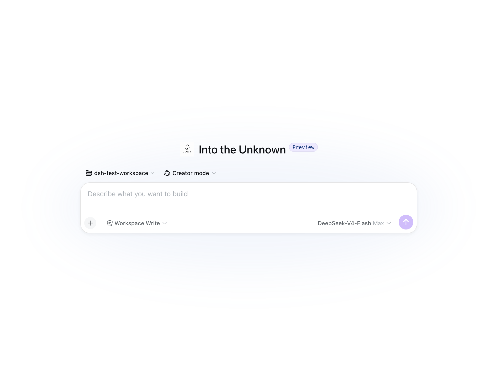
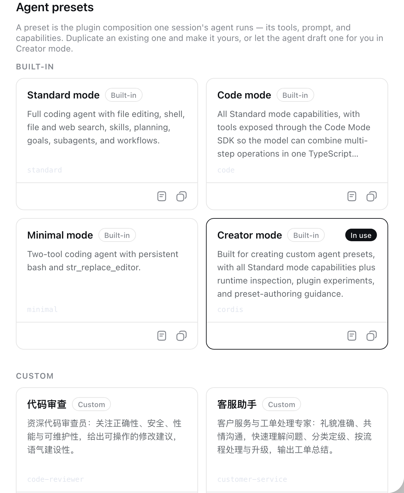
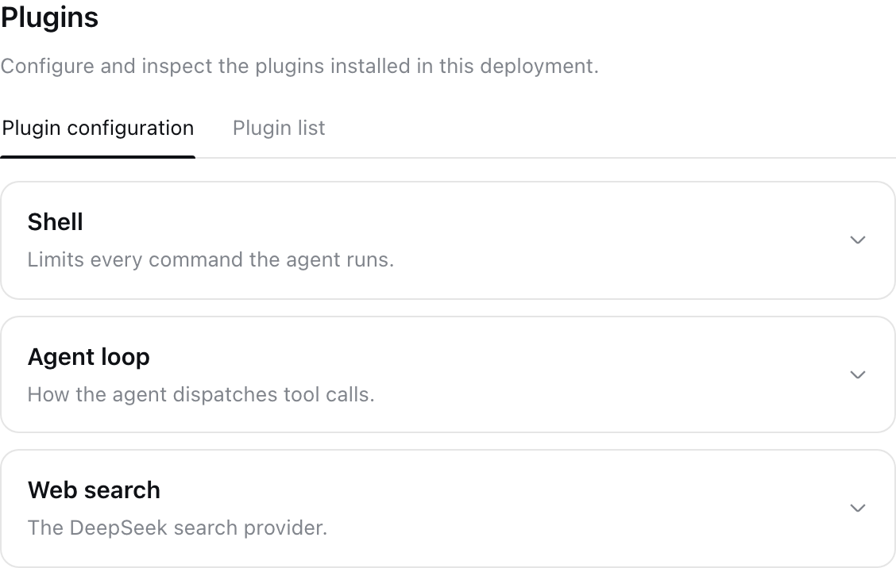

🧩
一切皆插件
每个能力都是组合里的一行插件：工具、服务、界面、预设。增删能力，就是增删一行组合。
一切皆插件的 Agent Harness
每个能力都是一个插件，每个会话都可以组装成你专属的智能体。
工具、提示词、身份、界面——都由你来定义。
会话、预设、插件组合——一切都在浏览器里直接完成，本地优先，开箱即用。

截图待补充：请按 Cmd+Shift+4 截取会话界面后保存为 assets/gui-chat.png

截图待补充：请截取新建会话的预设选择界面后保存为 assets/gui-presets.png

截图待补充：请截取插件/组合配置界面后保存为 assets/gui-compose.png
每个能力都是组合里的一行插件：工具、服务、界面、预设。增删能力，就是增删一行组合。
为不同角色创建独立 Agent：各自的工具集、提示词与身份。新建会话，即选即用。
Agent 可以检查运行时、实验插件，甚至为你创作全新的 Agent 预设——让 Agent 创造 Agent。
品牌名、主题色、Logo、界面元素，从内到外都能换成你自己的，做出独一无二的版本。
并行委托、多阶段编排，复杂任务拆给多个 Agent 协作完成，各司其职。
会话、设置与数据都存于本机，隐私可控、离线可用，你的智能体只属于你。
一行命令安装 8 个行业 Agent，覆盖运维、客服、数据分析、教学、审查与 IM 接入。
系统与代码维护
提取 PDF 文本内容
反欺诈与合规风控
工单处理与客户沟通
数据清洗与报告
讲解、出题与讲评
正确性/安全/性能审查
企业微信/钉钉消息推送
安装：bash presets/install.sh —— 安装后新建会话即可选用。
用 Docker 一键部署，或从源码运行：
# 方式一：Docker 一键部署（推荐，支持本地/国产模型）
docker compose -f deploy/docker-compose.yml up -d --build
# 方式二：从源码运行
git clone https://github.com/robin202208/JUDY-harness.git
cd JUDY-harness
pnpm install && pnpm run build && pnpm dsh web
# http://127.0.0.1:3080Docker 方式需要 Docker；源码方式需要 Node.js ≥ 22.19 与 pnpm。运行后即可在界面中选择或创建你的专属 Agent 预设。
JUDY 基于 MIT 许可开源，是 DeepSeek Harness（MIT）的二次开发分支。你可以自由修改、定制并部署自己的版本。
基于 DeepSeek Harness（MIT 协议）二次开发 · 保持开源，持续创新